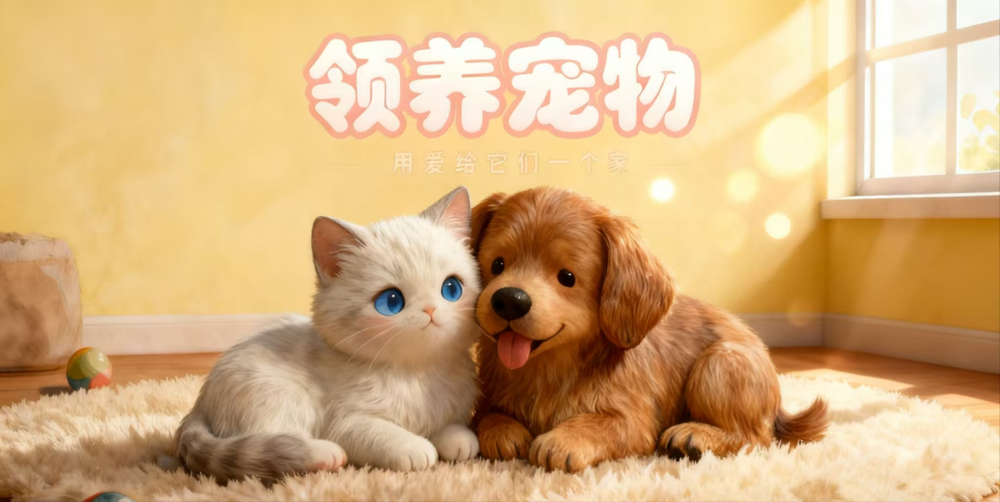
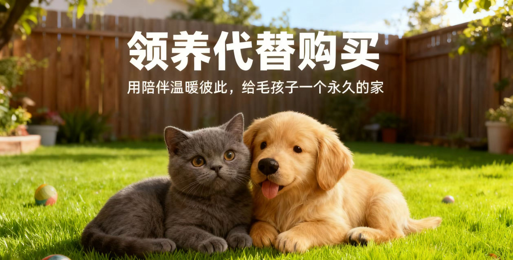
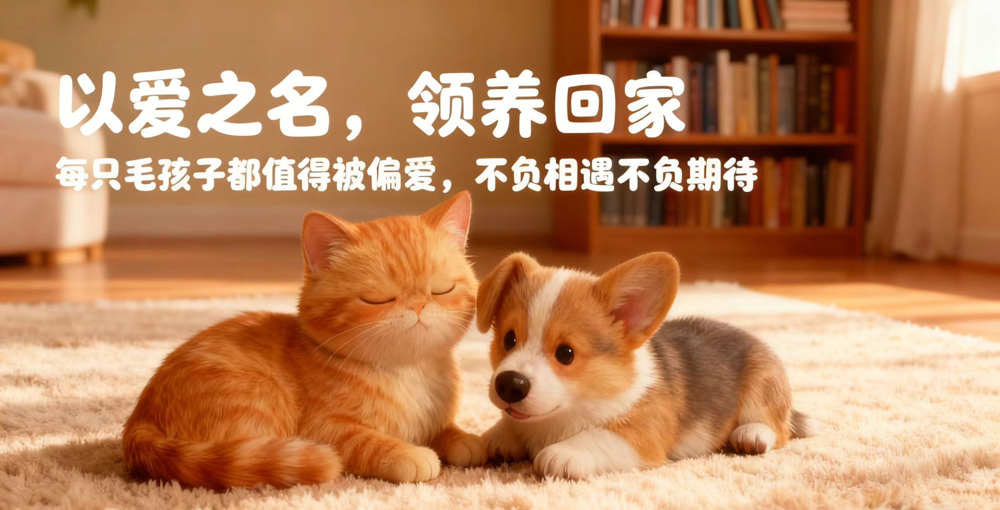
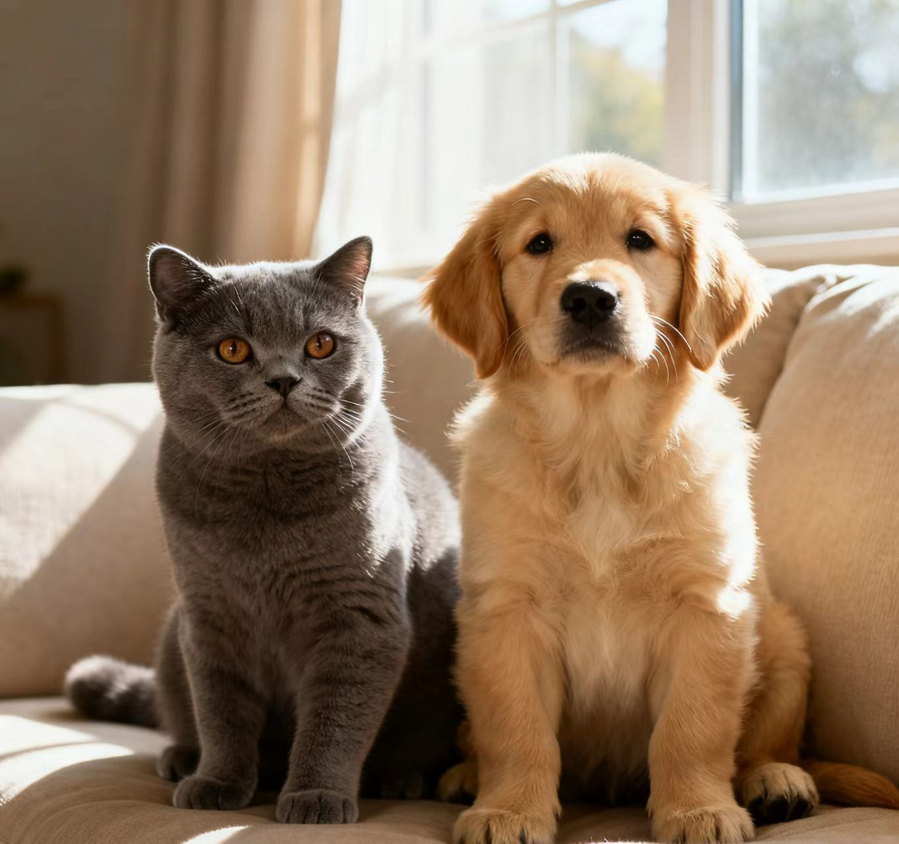
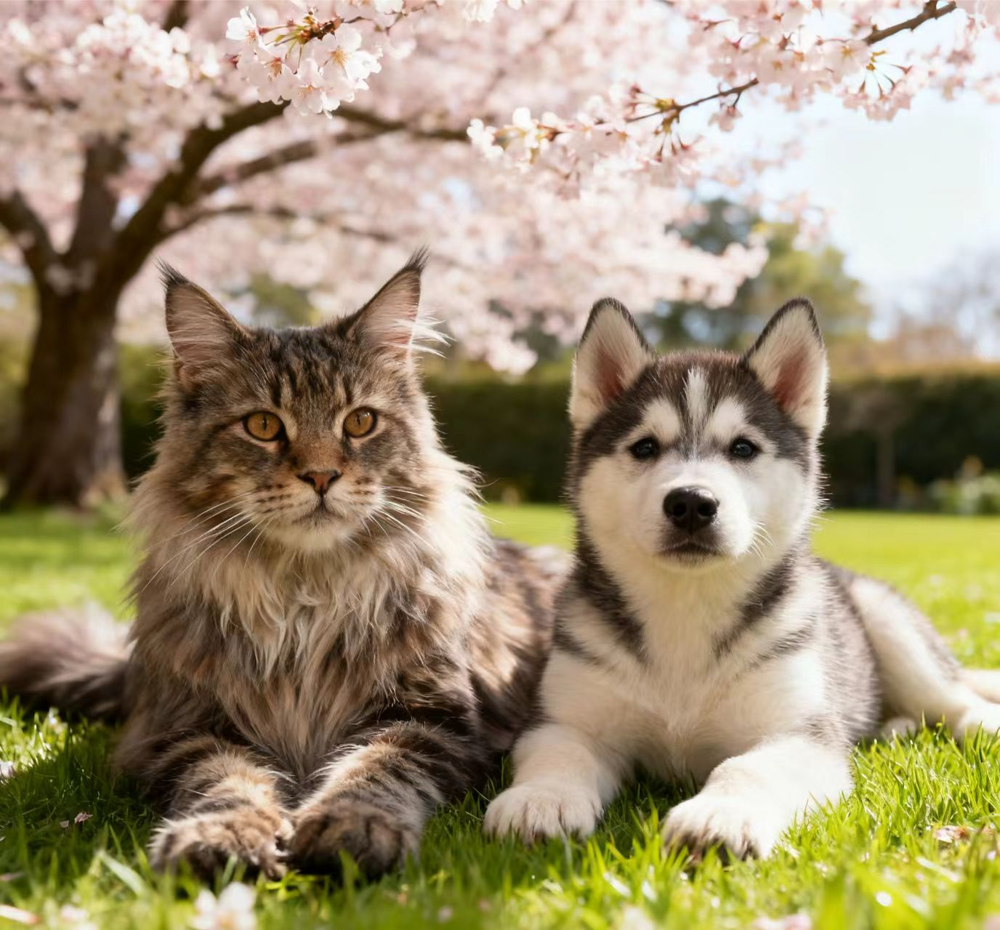
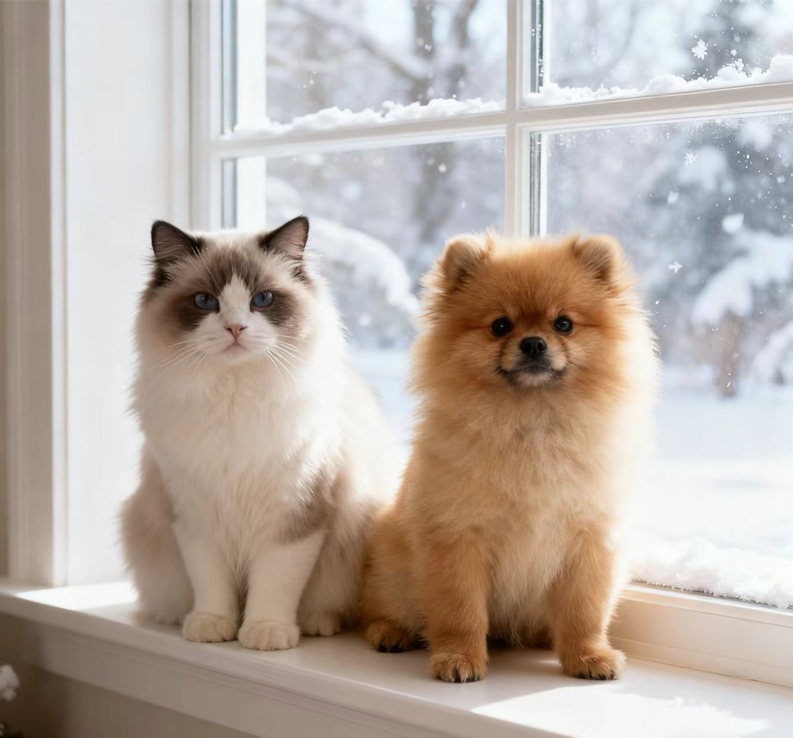
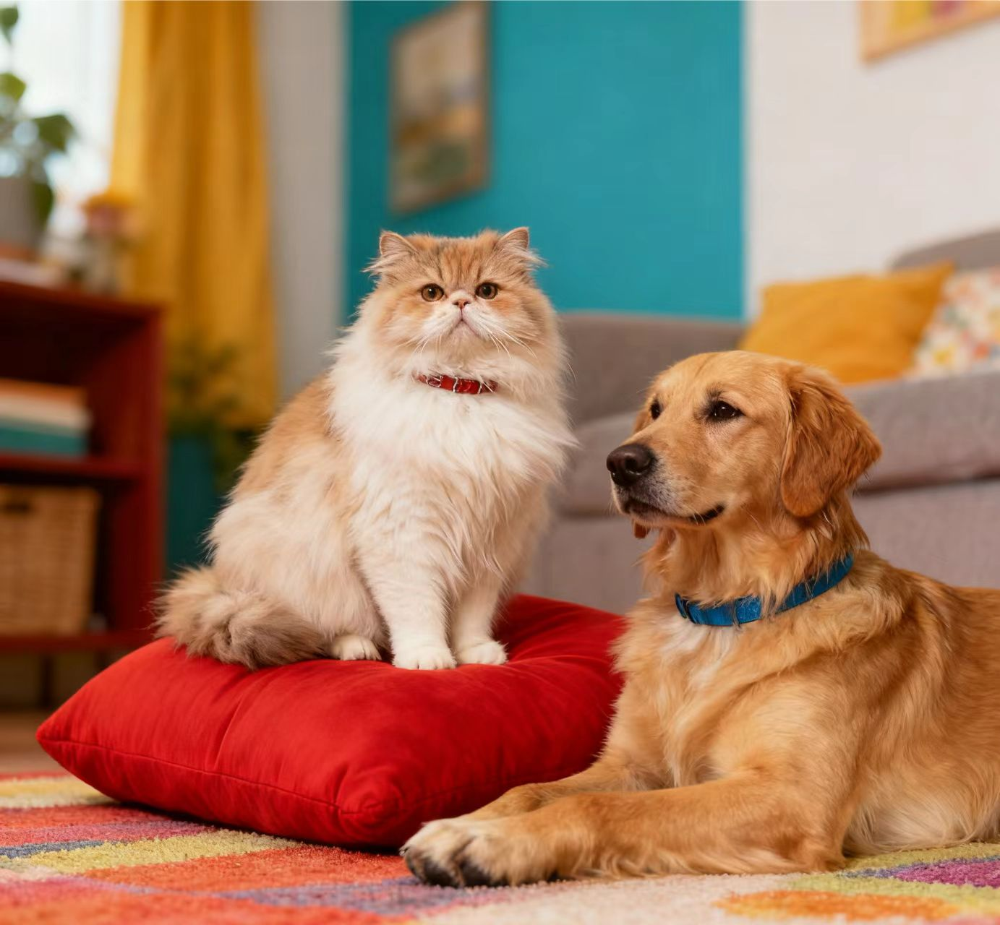
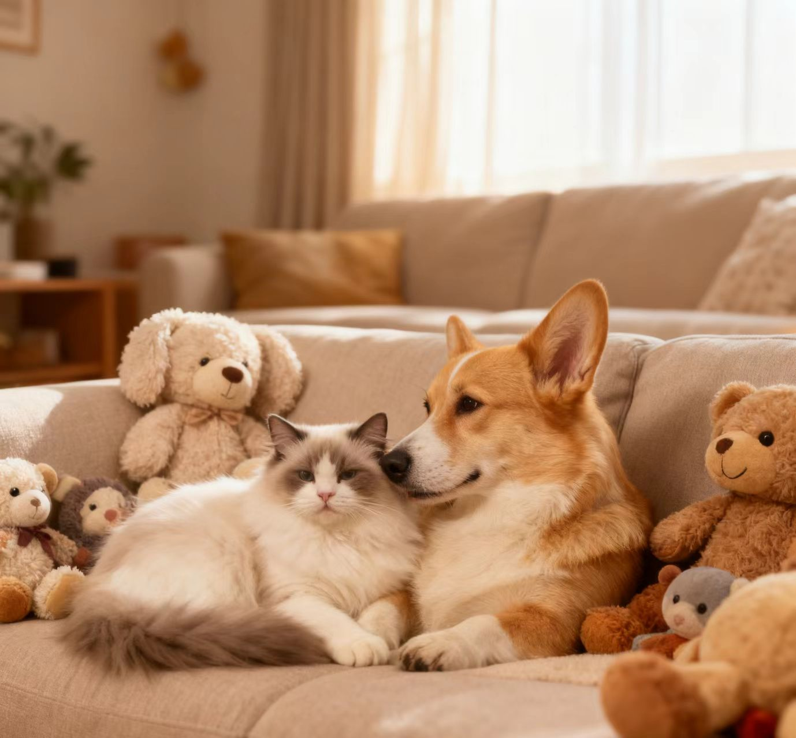
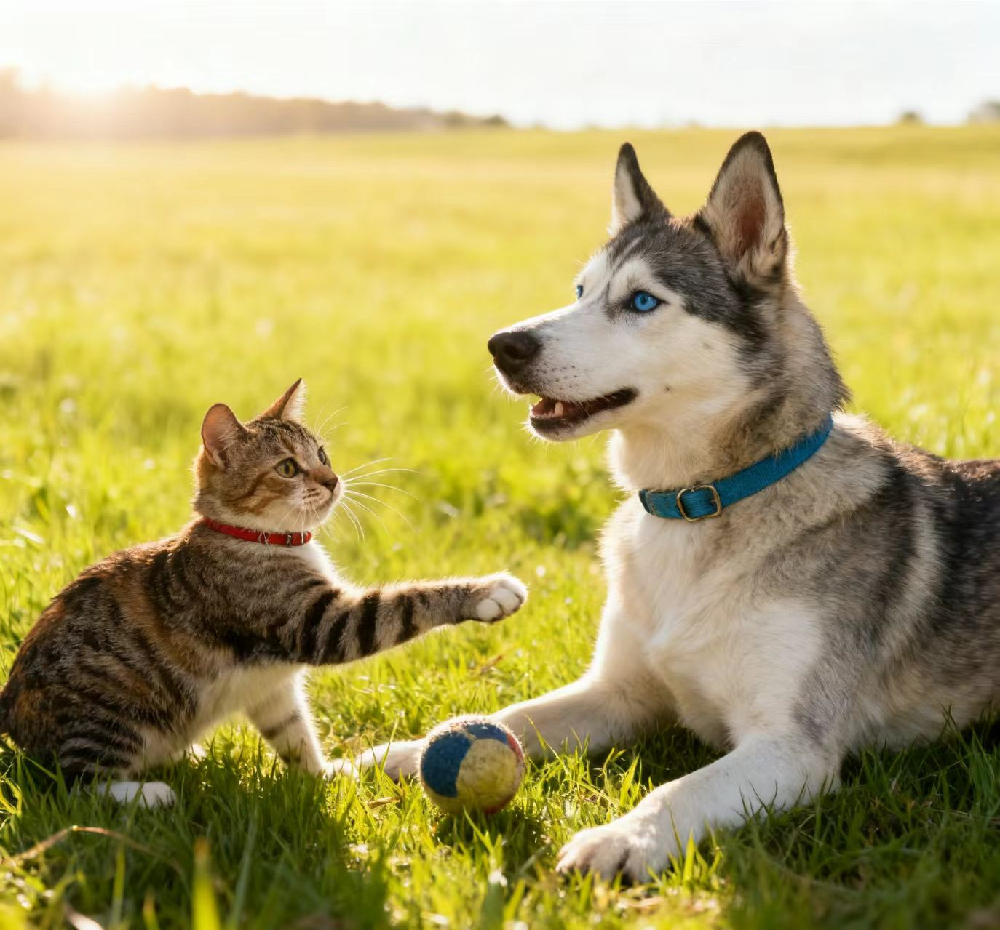

我们是一群长期关注流浪动物救助的志愿者，希望通过专业、透明的方式，让更多生命被看见。
在这里，你可以查看待领养动物信息，报名成为志愿者，或为救助行动提供物资与资金支持。
当前在站待领养动物：56 只 · 已成功送养：312 只

温柔粘人，对人和其他猫都非常友好，适合第一次养宠物的家庭。

活泼爱玩，已经完成基础服从训练，需要有一定陪伴时间的家庭。

从工地救助回来的小体狗狗，正在寻找一位温柔稳定的主人。



我们会与每一位领养人进行认真的沟通与家访，确保动物与家庭都适配。
点击进入「待领养」页面，可以按照年龄、性格、体型等条件筛选适合你的伙伴。
你可以选择成为固定志愿者、临时寄养家庭，或通过捐款和物资支持日常运营。
所有款项与物资去向将在「捐助支持」页面定期公示，做到公开透明。